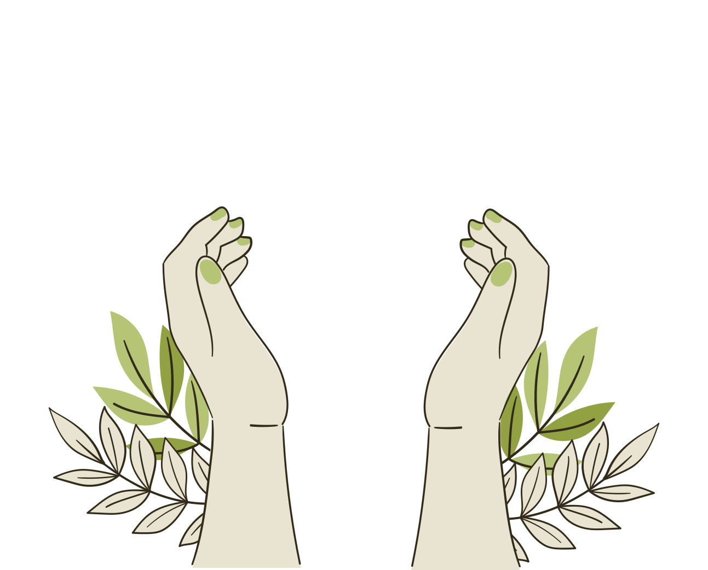
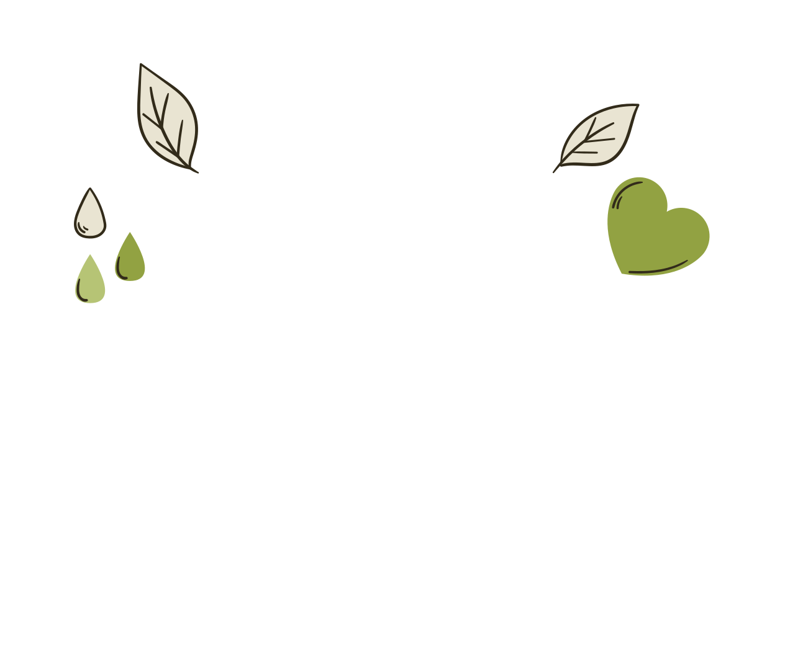
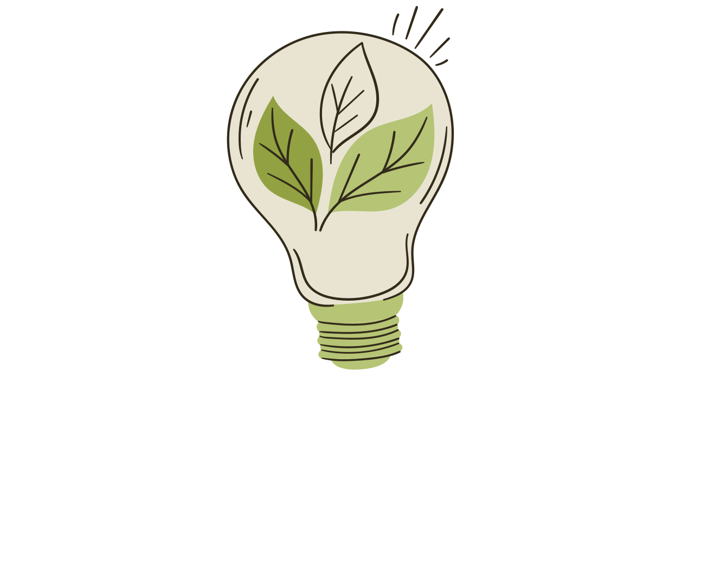
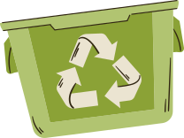
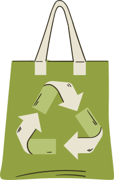
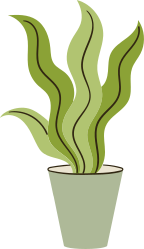
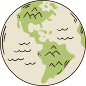

¡Bienvenido a EcoConciencia Joven: Juntos Sembrando un Futuro Sostenible!



En este espacio, exploraremos juntos cómo nuestras acciones cotidianas impactan el planeta y descubriremos estrategias poderosas para construir un mundo más verde y justo. Las prácticas sostenibles no son solo para expertos; son acciones que pretenden minimizar el impacto negativo hacia el medio ambiente, la sociedad y la economía, promoviendo la conservación de los recursos naturales y la equidad social para todos. ¡Tu participación es clave para el cambio! Te invitamos a explorar, aprender e inspirarte para ser un verdadero Guardián del Planeta.
Entendiendo la Sostenibilidad: Pilares y Propósito

El concepto de sostenibilidad se ha vuelto fundamental en la actualidad. Se define como el desarrollo que 'satisface las necesidades del presente sin comprometer la capacidad de las generaciones futuras de satisfacer las propias'. Se sustenta en tres pilares interconectados: la equidad social, la prosperidad económica y la calidad del medio ambiente. No se trata solo de proteger la naturaleza, sino de asegurar un desarrollo equilibrado que beneficie a todos y garantice los recursos para el futuro. La Agenda 2030 de las Naciones Unidas, con sus Objetivos de Desarrollo Sostenible (ODS), resalta la importancia global de adoptar prácticas sostenibles para la supervivencia y el bienestar de las generaciones presentes y futuras.
El Impacto de Nuestro Consumo: Conoce tu Huella y los Problemas Ambientales Actuales
A menudo no somos conscientes del verdadero impacto de nuestras decisiones diarias. La 'huella ecológica' es un indicador ambiental que mide el impacto de nuestro consumo sobre el planeta. Lamentablemente, la demanda de la humanidad sobre los recursos naturales crece un 50% más de lo que el planeta puede ofrecer. Problemas como la contaminación del aire y el agua, la deforestación y la pérdida de biodiversidad son consecuencias directas de un modelo de desarrollo insostenible y del uso irresponsable de los recursos. Aunque la conciencia ambiental ha aumentado, aún existe una brecha entre la intención de cuidar el ambiente y nuestro comportamiento real. ¡Es hora de cerrarla!
¡Manos a la Obra! Estrategias Clave para un Futuro Sostenible
Para enfrentar el desafío del cambio climático y proteger el medio ambiente, es fundamental implementar diversas acciones y estrategias. Aquí te presentamos algunas que puedes aplicar en tu día a día, en casa y en la escuela:

Gestión de Residuos
Implementar eficazmente la estrategia de las 3R: Reducir, Reutilizar y Reciclar. Realizar evaluaciones iniciales de los desechos generados permite identificar los tipos más comunes y su volumen.

Uso de Materiales Sostenibles
Evaluar el uso de materiales que reduzcan el consumo de papel y otros recursos es fundamental, promoviendo la digitalización de documentos y el uso de bolsas y envases reutilizables.

Ahorro de Recursos
Instalar dispositivos de ahorro de agua, captar y reutilizar agua de lluvia, y concientizar sobre el consumo de energía apagando equipos tras su uso son acciones vitales para la conservación.

Educación y Conciencia
Las instituciones educativas tienen la responsabilidad de integrar la sostenibilidad en los planes de estudio y capacitar a estudiantes en la toma de decisiones informadas y resolución de problemas ambientales.
Video Destacado: "Nuestro Compromiso Verde"
"Nuestro Compromiso Verde: Pequeñas Acciones, Gran Impacto"
(El video será añadido aquí una vez que esté editado)
Recursos Multimedia (Presentación de la Misión 1)
Explora esta presentación para profundizar en los conceptos de una economía sostenible.
Actividades Interactivas
Actividad 1: "Mi Reto Sostenible Diario"
Un cuestionario de autoevaluación donde respondes preguntas sobre tus hábitos diarios. Al finalizar, recibirás una "puntuación de sostenibilidad" y consejos personalizados para mejorar.
Propósito: Reforzar la conciencia ambiental y vincular la teoría con acciones prácticas.
Iniciar Cuestionario (Próximamente) Herramienta sugerida: Se podría implementar con Google Forms o Typeform.Actividad 2: "Cadena de Ideas Verdes"
Un espacio abierto donde puedes publicar tus propias ideas creativas para implementar prácticas sostenibles en tu entorno. ¡Comenta y colabora con las ideas de otros!
Propósito: Fomentar la participación, la creatividad y la resolución de problemas ambientales.
Ir al Muro Colaborativo (Próximamente) Herramienta sugerida: Un Padlet incrustado o un foro en el blog.